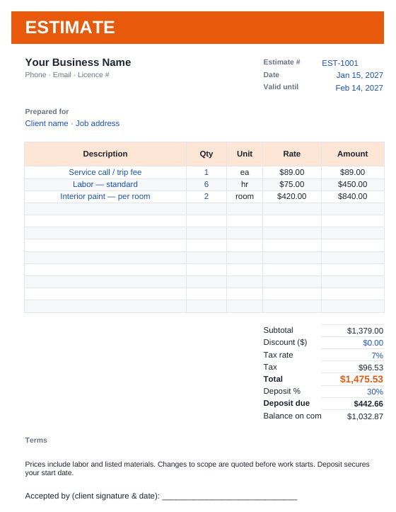

Home › Free Downloads › Excel
Free Excel downloadJob Estimate & Invoice Template
Pick line items from your own price list and the estimate fills in rates, tax, deposit and balance. Win the job and the invoice is already done.
⬇ Download the Excel file .xlsx · free · no sign-upWorks in Microsoft Excel, Google Sheets (File → Import) and Apple Numbers.

What’s inside
- Price list you fill in once
- Estimate with dropdown line items, discount, tax and deposit
- Matching invoice that copies the estimate lines
- Print-ready layout with terms and a signature line
How to use it
- List your services and rates on Price List.
- Build the estimate by picking items and typing quantities.
- When it is accepted, update the invoice number and dates and print or save as PDF.

ScopeBid: Estimate & Invoice
ScopeBid builds quotes from your saved pricing on iPhone and turns approved jobs into invoices, even with no signal.
Get it free on the App StoreQuestions
Can I change the tax rate and deposit?
Yes. Both are blue input cells under the totals.
Can I add my logo?
Yes. Insert your logo above the business name on the Estimate and Invoice tabs.
Who is it for?
Painters, cleaners, handymen, landscapers, detailers and other small service businesses.
More free downloads
Daily Water Intake Tracker 2027Shift & Pay Tracker with OvertimeClient Appointment Booking LogSleep Log & Bedtime Routine TrackerScreen Time Tracker: What Your Phone Really CostsBible Reading Tracker: All 66 BooksFamily Emergency Plan TemplateAfter-the-Argument Repair WorksheetThe 11 Human Body Systems: Free SlidesBooks of the Bible by Section: Free SlidesWhy Is the Sky Blue and Sunsets Red? Free Slides